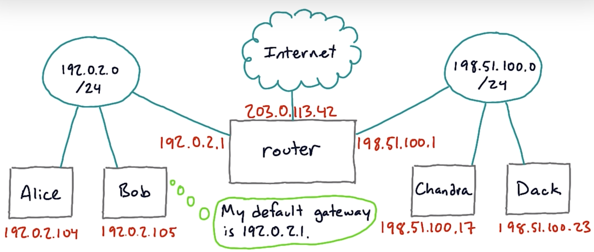
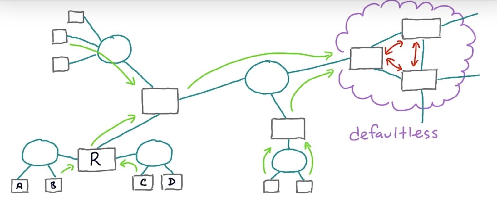

Routing
Maps a destination address to the gateway (i.e. next hop IP address) or host (intended destination).
This is maintained via a routing table:
| Destination | Gateway / Host |
|---|---|
| 127.0.0.1 | 127.0.0.1 |
| (others) | 192.168.1.254 (home router) |
You can see the routing table using
netstat -rn
Output:
Internet:
Destination Gateway Flags Netif Expire
default 192.168.1.254 UGScg en0
127 127.0.0.1 UCS lo0
127.0.0.1 127.0.0.1 UH lo0
169.254 link#5 UCS en0 !
The headers have the following meaning:
Destination: The destination IP address or network.Defaultis the one that is used when no other route matches the destination IP address.Gateway: The next hop IP address that will be used to reach the destination.link#Xrefers to the indexXof an interface when you runifconfigon macOS.Flags: A set of flags that give more information about the route. For example,Umeans the route is up,Gmeans to use this route as a gateway,Hmeans the destination is a host, etc.Refs: The reference count (how many routes refer to this route).Use: The count of the number of packets sent using this route.Netif: The network interface used for this route.Expire: The time in seconds until the route expires (only used for some types of routes).
Routing protocols
- Static: manually compute routes
- Dynamic
NAT (Network Address Translation)
A NAT allows all of the hosts of a router share one or a few public IPv4 addresses (usually between private and public). This is to deal with shortage of IPv4 addresses. What it does is to modify the IP addresses in the IP header.

Router is a device that connects two different IP networks.

